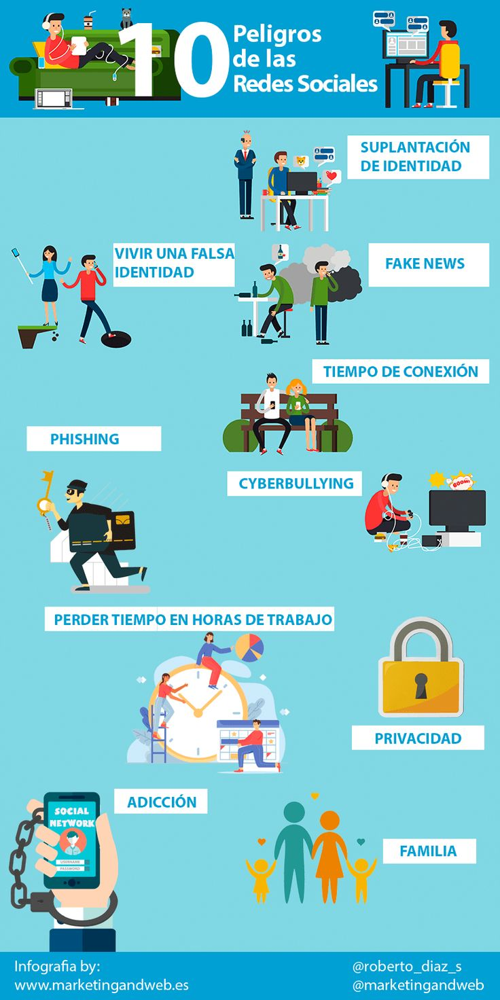

Configura la privacidad de tu cuenta: Revisa y ajusta la configuración de privacidad de tu cuenta para controlar quién puede ver tu información y actividades. Limita la visibilidad de tus publicaciones solo a amigos o contactos de confianza.
Utiliza contraseñas seguras y únicas: Al igual que en otros servicios en línea, utiliza contraseñas fuertes y diferentes para cada una de tus cuentas de redes sociales. Cambia tus contraseñas regularmente y habilita la autenticación de dos factores cuando esté disponible.
Ten cuidado con las solicitudes de amistad y los mensajes de desconocidos: No aceptes solicitudes de amistad ni interactúes con personas que no conoces en la vida real. Evita hacer clic en enlaces o archivos adjuntos en mensajes de personas desconocidas, ya que pueden contener malware o ser intentos de phishing.
Piensa antes de publicar: Antes de compartir algo en tus redes sociales, considera quién podría verlo y cómo podría afectar tu reputación o seguridad. Evita publicar información personal sensible, como tu dirección, número de teléfono o detalles financieros.
Sé consciente de la ingeniería social: Los estafadores pueden intentar engañarte para que reveles información personal o hagas clic en enlaces maliciosos mediante técnicas de ingeniería social. Sé escéptico ante las solicitudes inusuales o las ofertas que parecen demasiado buenas para ser verdad.
Actualiza tu software y aplicaciones: Mantén actualizados tus dispositivos móviles y aplicaciones de redes sociales con las últimas versiones y parches de seguridad para protegerte contra vulnerabilidades conocidas.
Revisa tus ajustes de etiquetado y geolocalización: Controla quién puede etiquetarte en publicaciones y fotos, así como quién puede ver tu ubicación en tiempo real. Desactiva la geolocalización cuando no la necesites para proteger tu privacidad y seguridad.
Ten cuidado con los concursos y encuestas: Evita participar en concursos o encuestas que soliciten información personal sensible o acceso a tu cuenta de redes sociales. Podrían ser intentos de phishing o estafas.
Reporta comportamientos sospechosos: Si notas actividad sospechosa en tu cuenta, como accesos no autorizados o mensajes inapropiados, repórtalo a la plataforma de redes sociales y toma medidas para proteger tu cuenta, como cambiar tu contraseña.
Educa a tus hijos: Si tus hijos usan redes sociales, enséñales sobre los riesgos en línea y cómo proteger su privacidad y seguridad en línea.
